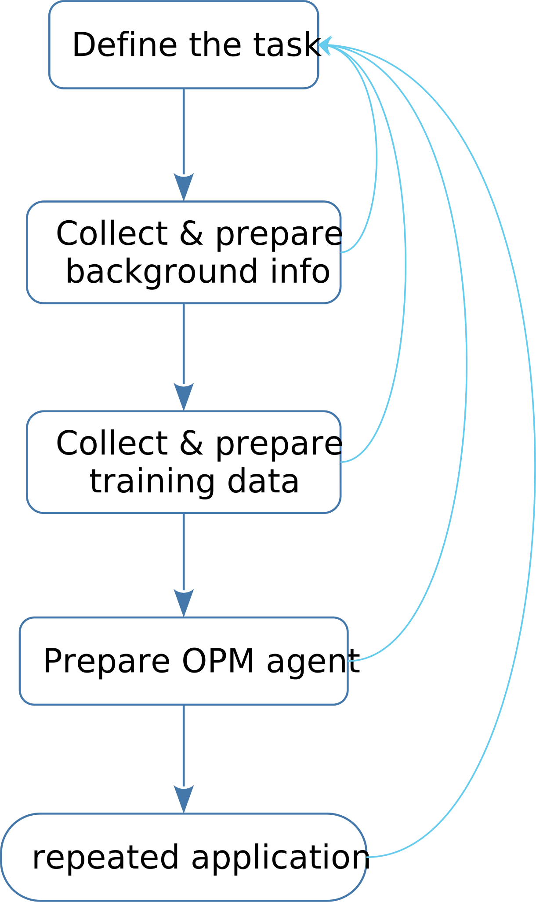
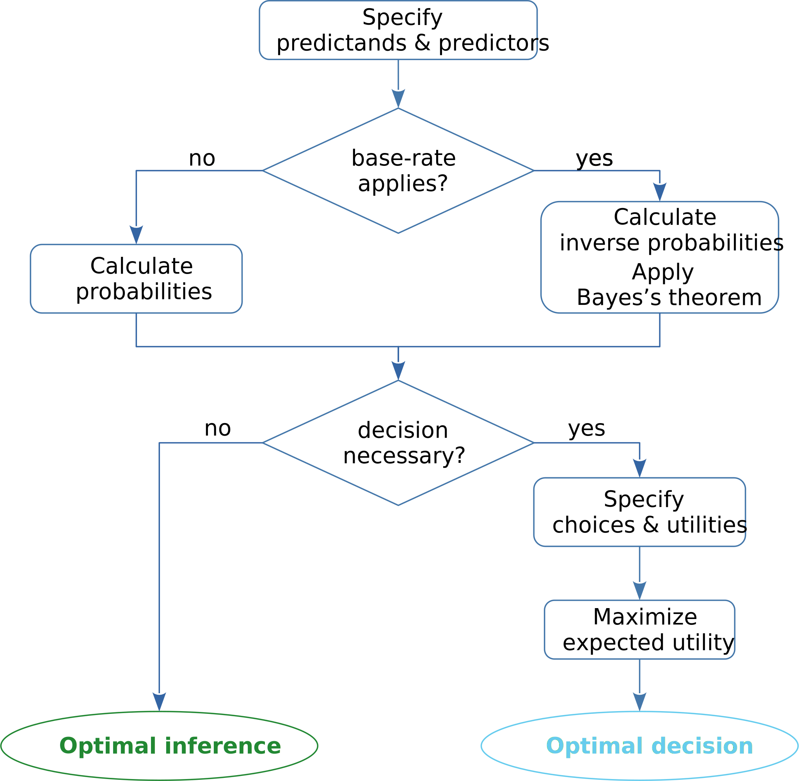

34 Prototype code and workflow
\[ \DeclarePairedDelimiters{\set}{\{}{\}} \DeclareMathOperator*{\argmax}{argmax} \]
A concise documentation is here given of the prototype R functions designed in chapter 33 and described in § 33.2, together with an example workflow for their use.
The functions can be found in
https://github.com/pglpm/ADA511/tree/master/code/OPM-nominal
34.1 Function documentation
Optional arguments are written with =..., which specify their default values. Some additional optional arguments, mainly used for testing, are omitted in this documentation.
-
guessmetadata(data, file=NULL) -
- Arguments:
-
data: either a string with the file name of a dataset in.csvformat (with header line), or a dataset given as adata.tableobject.file: a string specifying the file name of the metadata file. If nofileis given anddatais a file name, thenfilewill be the same name asdatabut with the prefixmeta_. If nofileis given anddatais not a string, then the metadata are output tostdout.
- Output:
-
- either a
.csvfile containing the metadata, or adata.tableobject asstdout.
- either a
-
buildagent(metadata, data=NULL, kmi=0, kma=20) -
- Arguments:
-
metadata: either a string with the name of a metadata file in.csvformat, or metadata given as adata.table.data: either a string with the file name of a training dataset in.csvformat (with header line), or a training dataset given as adata.table.kmi: the \(k_{\text{mi}}\) parameter of formula (33.1).kma: the \(k_{\text{ma}}\) parameter of formula (33.1).
- Output:
-
- an object of class
agent, consisting of a list of an arraycountsand three vectorsalphas,auxalphas,palphas.
- an object of class
-
infer(agent, predictand=NULL, predictor=NULL) -
- Arguments:
-
agent: anagentobject.predictand: a vector of strings with the names of variates.predictor: either a list of elements of the formvariate=value, or a corresponding one-rowdata.table.
- Output:
-
- the joint probability distribution \(\mathrm{P}(\mathit{predictand} \nonscript\:\vert\nonscript\:\mathopen{} \mathit{predictor}\mathclose{}\mathord{\nonscript\mkern 0mu\textrm{\small=}\nonscript\mkern 0mu}\mathopen{}{\small\verb;values;} \mathbin{\mkern-0.5mu,\mkern-0.5mu}\mathsfit{\color[RGB]{34,136,51}data}\mathbin{\mkern-0.5mu,\mkern-0.5mu}\mathsfit{I}_{\textrm{d}})\) for all possible values of the predictands.
- Notes:
-
- If
predictorsis present, the agent is acting as a “supervised-learning” algorithm. Otherwise it is acting as an “unsupervised-learning” algorithm. The obtained probabilities could be used to generate a new units similar to the ones observed. - If
predictandis missing, the predictands are taken to be all variates not listed among the predictors (hence all variates, if no predictors are given). - The variate names in the
predictandandpredictorinputs must match some variate names known to the agent. Unknown variate names are discarded. The function gives an error if predictand and predictor have variates in common.
- If
-
decide(probs, utils=NULL, all=FALSE) -
- Arguments:
-
probs: a probability distribution for one or more variates.utils: a named matrix or array of utilities. The rows of the matrix correspond to the available decisions, the columns or remaining array dimensions correspond to the possible values of the predictand variates.all: a boolean,TRUEif the output should have all decisions having maximal expected utilities (if more than one);FALSE(default) if the output should only have one of them, selected with equal probabilities.
- Output:
-
- a vector of strings with the decisions having maximal expected utility, if
allisTRUE, or just one of them, selected with equal probability , ifallisFALSE(the default).
- a vector of strings with the decisions having maximal expected utility, if
- Notes:
-
- If
utilsis missing orNULL, a matrix of the form \(\begin{bsmallmatrix}1&0&\dotso\\0&1&\dotso\\\dotso&\dotso&\dotso\end{bsmallmatrix}\) is assumed (which corresponds to using accuracy as evaluation metric).
- If
( Further documentation will be added )
-
rF(n=1, agent, predictand=NULL, predictor=NULL) - (generate population-frequency samples)
-
rF(n=1, agent, predictand=NULL, predictor=NULL) - (generate population-frequency samples)
-
mutualinfo(probs, A, B, base=2) - (calculate mutual information)
34.2 Typical workflow
The workflow discussed here is just a guideline and reminder of important steps to be taken when applying an optimal agent to a given task. There cannot be more than a guideline, because each data-science and engineering problem is unique. Literally following some predefined, abstract workflow typically leads to sub-optimal results. Sub-optimal results can be acceptable in some unimportant problems, but are unacceptable in important problems, where, say, people’s lives can be involved, such as medical ones.
We can roughly identify four main stages:

- Define the task
- In this stage we clarify what the task to be solved is – and why. Asking “why” often reveals the true needs and goals underlying the problem. If possible, the task is formalized. For example, the formal notions introduced in the parts Data I and Data II might be used: a specific statistical population is specified, with well-defined units and variates, and so on.
- Collect & prepare background info
- Background and metadata information, as well as auxiliary assumptions, are collected, examined, prepared. Remember that this kind of information is required in order to make sense of the data (§ 27.4). In this stage we ask questions such as “Is our belief about the task exchangeable?”, “Can the statistical population be considered infinite?”, and similar question that make clear which kinds of ready-made methods and approximations are acceptable or not. This stage also helps for correcting possible deficiencies in the training data used in the next stage. For instance, some possible variate values might not appear in the training data, owing to their rarity in the statistical population.
In this stage it is especially important to specify:
- definition of units (what counts as “unit” and can be used as training data?)
- definition of variates and their domains
- initial probabilities
- possible decisions that may be required in the repeated task applications
- utilities associated with the decisions above
- Collect & prepare training data
- Units similar to the units of our future inferences, but of which we have more complete information, are collected and examined. These are the “training data”. They are used in the next step to make the agent learn from examples. The problematic notion of similarity was discussed in § 20.2: what counts as “similar” is difficult to decide, and often we shall have to revise our decision. Sometimes no units satisfactorily similar to those of interest are available. In this case we must assess which of their informational relationships can be considered similar, which may lead us to use the agent in slightly different ways. We must also check whether training units with partially missing variates can be used by our agent or not.
- Prepare OPM agent
- The background information and training data (if any available) are finally fed to the agent.
- Repeated application
- Inferences are drawn, and decision made, for each new application instance. With our prototype agent, the inferences and the decisions can in principle be different from instance to instance.
Every new application can be broken down into several steps:

( Remaining steps to be added soon )